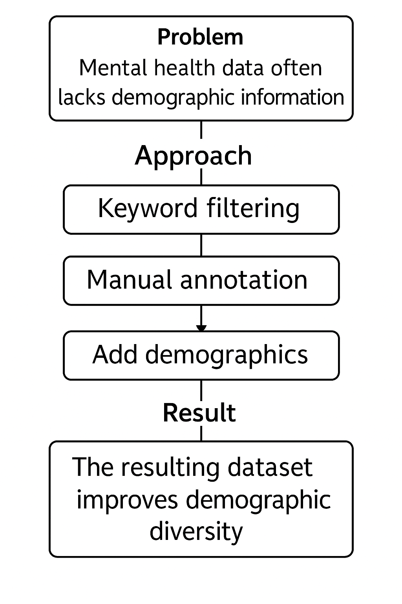

Using Sentiment Analysis to measure perception of mental health across different platforms.
Fall 2025 CSCI 5541 NLP: Class Project - University of Minnesota
Golden Data Retrievers
Jiyu Huang
Ziqi Zhou
Kylie Dyke
Jiyu Huang
Ziqi Zhou
Kylie Dyke
Mental health is a pressing public health issue, especially for vulnerable populations, yet online discussions often lack demographic context. This limits our ability to understand how different identities experience and express mental health concerns.
We curated and manually annotated Reddit posts for demographic markers (gender, LGBTQ+ identity, racial identity) and applied sentiment analysis using pretrained models (VADER/TextBlob) to assess attitudes toward mental health within these groups.
A figure that conveys the main idea behind the project or the main application being addressed.

What did you try to do? What problem did you try to solve? Articulate your objectives using absolutely no jargon.
We tried to understand how different groups of people feel and talk about mental health. Many online discussions about mental health don’t include important details like the writer’s gender, race, or LGBTQ+ identity, which makes it hard to see how different groups are affected.
How is it done today, and what are the limits of current practice?
Right now, researchers use social media data to study mental health, but most of this data is anonymous and lacks demographic information. This means we miss how specific groups feel or struggle differently, and we can’t spot patterns tied to identity.
Who cares? If you are successful, what difference will it make?
If we’re successful, this will help mental health researchers and advocates better understand the needs of underrepresented groups. It could lead to more targeted support, outreach, and resources for communities that are often overlooked.
What did you do exactly? How did you solve the problem? Why did you think it would be successful? Is anything new in your approach?
We collected Reddit posts related to mental health and manually annotated them with demographic details like gender, LGBTQ+ identity, and race, using keyword filtering and content cues. Then we used sentiment analysis tools like VADER and TextBlob to classify the tone of each post. Our approach is new because it enriches anonymous mental health discussions with demographic context, which is typically missing.
What problems did you anticipate? What problems did you encounter? Did the very first thing you tried work?
The time to manually annotate the text took longer than we have thought.
How did you measure success? What experiments were used? What were the results, both quantitative and qualitative? Did you succeed? Did you fail? Why?
Nemo enim ipsam voluptatem quia voluptas sit aspernatur aut odit aut fugit, sed quia consequuntur magni dolores eos qui ratione voluptatem sequi nesciunt.
| Experiment | 1 | 2 | 3 |
|---|---|---|---|
| Sentence | Example 1 | Example 2 | Example 3 |
| Errors | error A, error B, error C | error C | error B |

How easily are your results able to be reproduced by others? Did your dataset or annotation affect other people's choice of research or development projects to undertake? Does your work have potential harm or risk to our society? What kinds? If so, how can you address them? What limitations does your model have? How can you extend your work for future research?